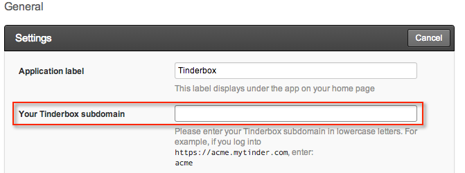
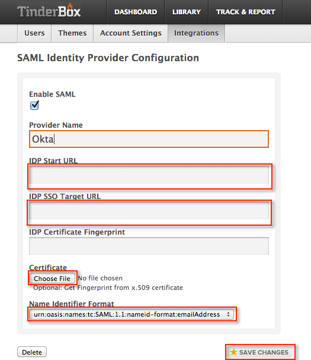

This setup might fail without parameter values that are customized for your organization. Please use the Okta Administrator Dashboard to add an application and view the values that are specific for your organization.
Go to the Tinderbox administrator site for your Tinderbox domain, located at https://<yoursubomain>.mytinder.com/integrations/saml, where <yoursubdomain> is the subdomain name you entered on the Okta Tinderbox General tab, shown below.

Select Integrations and go to the SAML Identity Provider Configuration screen, shown below.

Check Enable SAML.
Leave the field for IDP Start URL blank.
Copy the following value to the IDP SSO Target URL field.
Sign into the Okta Admin dashboard to generate this value.
Download the following x.509 Certificate.Sign into the Okta Admin dashboard to generate this value.
Select Choose File and point to the certificate you just downloaded.
Note: When you save the changes, the IDP Certificate Fingerprint field is populated.
Keep the Name Identifier Format as urn:oasis:names:tc:SAML:1.1:nameid-format:emailAddress.